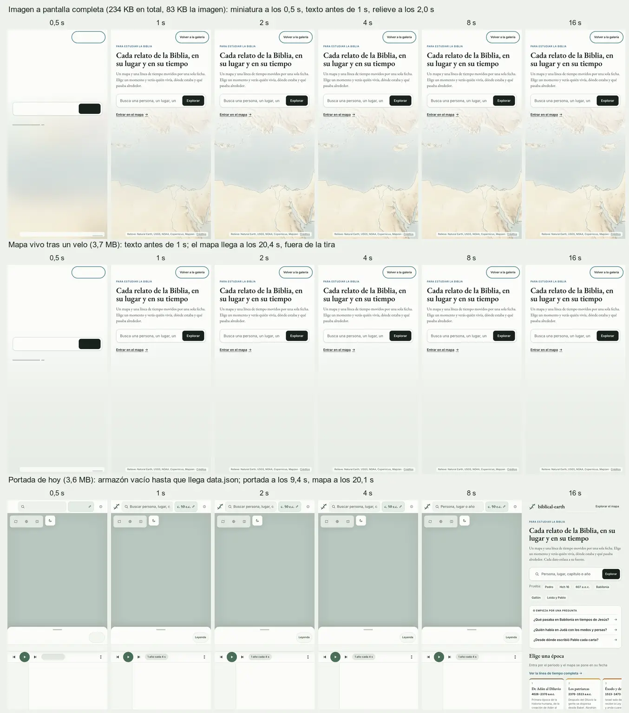

Fondos a pantalla completa para la portada
Cuatro encuadres del mapa antiguo del sitio, capturados del mapa real sin la interfaz, y cuatro maneras de ponerles texto encima sin perder la calma del banner. Cada muestra lleva el título y la búsqueda de la portada de hoy para juzgar el contraste. Pulsa una muestra para verla a tamaño real; Esc vuelve aquí.
Todo sale de nuestro relieve (Natural Earth y datos de elevación de Mapzen), sin fotografías ni ilustraciones ajenas. Los créditos que debe llevar cada imagen están en CREDITS.md; los tratamientos, en treatments.css.
| Encuadre | Ancha 2560 × 1440 | Ancha 1280 × 720 | Alta 860 × 1800 (móvil) |
|---|
Un portátil corriente (1× de densidad) descarga la de 1280; una pantalla de 2× o de 1440 píxeles, la de 2560; un móvil en vertical, la alta. Mientras llega, se ve el color medio de la imagen y una miniatura desenfocada de unos 130 bytes que va dentro del CSS, con el velo y el texto ya pintados.
Cómo se monta
<div class="be-backdrop t-paper bd-paul-journeys">
<picture>
<source media="(max-width: 760px) and (orientation: portrait)" srcset="img/paul-journeys-tall.webp">
<img class="be-backdrop__media" alt="" fetchpriority="high" decoding="async"
srcset="img/paul-journeys-wide-1280.webp 1280w, img/paul-journeys-wide.webp 2560w" sizes="100vw">
</picture>
<div class="be-backdrop__tint"></div>
<div class="be-backdrop__veil"></div>
<div class="be-backdrop__content">… título, búsqueda …</div>
<p class="be-backdrop__credit">Relieve: Natural Earth, USGS, NOAA, Copernicus, Mapzen · <a href="acerca.html#gracias">Créditos</a></p>
</div>Sobre el mapa vivo, el <img> se cambia por el contenedor del mapa con inert: el velo y el tinte son capas encima y funcionan igual.
Imagen o mapa vivo: lo que cuesta en un móvil lento
Carga en frío en un móvil de 430 píxeles con red 4G lenta (1,6 Mbit/s, 150 ms de latencia) y la CPU cuatro veces más lenta, con el servidor comprimiendo como GitHub Pages:
| Portada | Descarga | Texto visible | Fondo completo |
|---|---|---|---|
| Imagen a pantalla completa | 234 KB | antes de 1 s | 2,0 s |
| Mapa vivo tras un velo | 3,7 MB | antes de 1 s | 20,4 s |
| Portada de hoy | 3,6 MB | 9,4 s | (tapa el mapa) |
El mapa vivo necesita data.json (845 KB comprimido), MapLibre (309 KB) y el relieve de las cuatro extensiones (1,8 MB) antes de pintarse. Una imagen puede hacer de fondo mientras tanto y dejar paso al mapa cuando esté listo.
